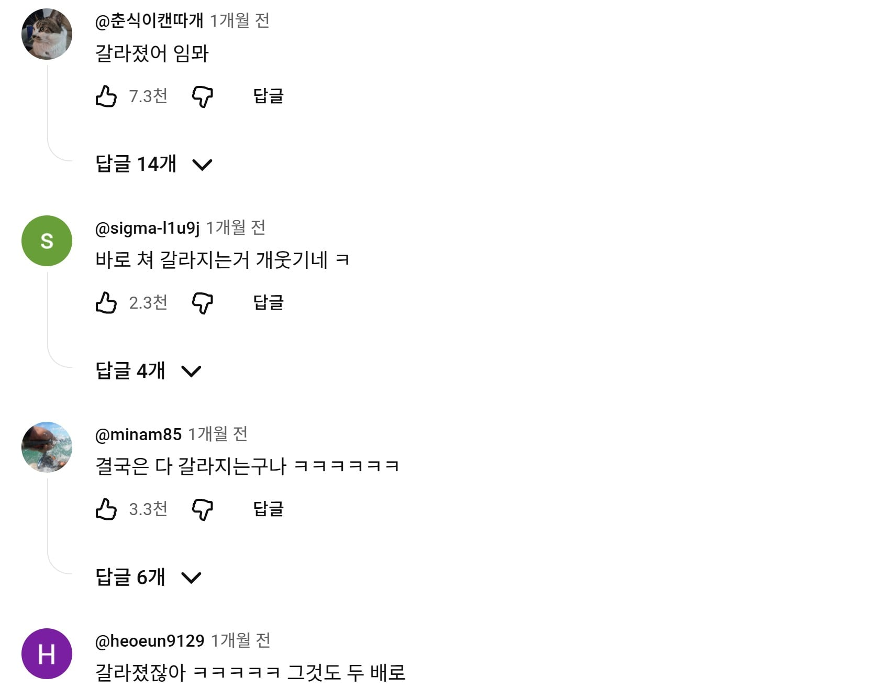

ㅋㅋㅋㅋㅋ

ㅋㅋㅋㅋㅋ
걍 영상 병신임
걍 일부러 병신처럼 따라하는 영상같은데
목심 옆에 선없으면 안박힌다던데
분해 해보세요 ㅎㅎ
그냥 페스툴 도미노 사면 됨
부자네
나사못을 박아야 안 갈라지지 ㅅㅂ ㅋㅋㅋ
아니 개쳐망했잖아? 본드로 버틸거면 왜 햇냐ㅋㅋ
다갈라져서 일년도 못쓰겠구만 뭔 ㅋㅋㅋㅋ
보동웍스 보여주고 싶다
그양반도 가끔 이상한거 올리던데..
괜히 목공할때 나사를 끝까지 안돌리는게 아닌데 다 쳐돌리네 ㅋㅋㅋ
게이
갈라졌다 이기
마지막에 갈라진 틈으로 본드 찍 ㅋ
돈더주면 못할게 읍지
갈라졌다이기

나사 몸통이 들어가는 구멍 드릴링하고 박으면 안갈라짐
저 병신은 대가리 들어갈 구멍만 팜
당당하게 올린것도 웃기네 ㅋㅋㅋㅋㅋㅋㅋ
못질안하고 피스질할꺼면 사라기리로 박으면 깔끔함
본드 삐질
저거 딱 맞물리게 되있어서 나사 안 박아도 되는 구조 있지 않나? 그게 좋던데 의외로 튼튼하고
목공용 피스가 따로있음 너넨 그거써라
개나소나 어쩌고 하면서 거들먹 거리길래 얼마나 잘하나 볼까 했는데 뭔 씹 ㅋㅋ
ㅋㅋㅋㅋㅋㅋㅋㅋㅋㅋㅋㅋㅋㅋ
바로쳐갈라졌대 ㅋㅋㅋㅋㅋㅋㅋㅋㅋㅋ
합판에 나사못 박을 때는 기리 구멍을 먼저 뚫어줘야 갈라짐이 없음..
본드 찍 싸네
작은 구멍 뚫어놓고 거따가 박을라나 보다 했는데 걍 구멍 안쪽으로 더 깊숙이 박아버리면 뭔차이고 ㅋㅋ
완전깔끔!
마지막에 찍 뮤ㅓㄴ데 ㅋㅋ
자막 언행불일치 ㅋㅋㅋㅋㅋㅋㅋㅋㅋㅋ
제목 : 99%가 하는 실수 (내가 실수하는걸 잘보셈)
요즘 망치로 못박는 일이 거의 없는데. 보통 이중 기리 쓰지.
인테리어는 저런 못 대신 타카 쓰고, 대목들도 타정기를 쓰니
나사도 존나 약한거 쓰네 ㅋㅋㅋ 그냥 큰거 박는게 더 튼튼하지
왜 일반못을 박는거임?
나사못 3개가 더 강하지 않아?